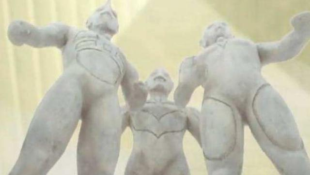
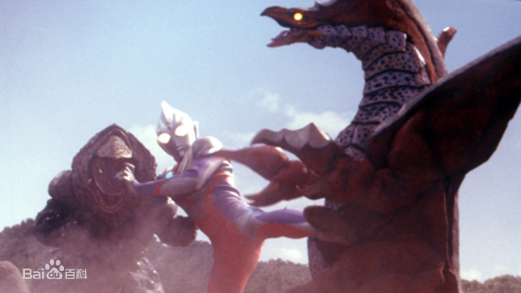
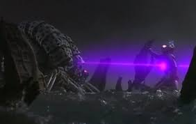

Ultraman Tiga
Tiga Ultraman is the main character in the Japanese tokusatsu TV show Ultraman Tiga produced by Tsuburaya Productions. He is the first Heisei Ultraman and the first Ultraman with the ability to transform. Different from other Ultramans is that Tiga Ultraman is a giant that appeared on Earth in the ancient civilization period, but not the Earth-born Ultraman.

| Height | Micro ~ 53 m |
| Weight | 44,000 t |
| Age | More than 30 million years old |
| Race | Ancient Ultra |
| Human Form | Madoka Daigo |
Ancient Times
Tiga was once the leader of the Dark Giants, and was a great destroyer, but since he shed his shadow nature in favor of the light and turned on his comrades by sealing them in statue form behind a great seal and taking their powers. He eventually became the strongest of a trio of Ultra Warriors among the Ultra colony which protected an ancient civilization on Earth. Tiga and his team saved the civilization from countless catastrophes. After their duty was done, they were laid to rest inside a giant pyramid until the Earth needed them again. Their essences left the Earth and leaving behind physical replicas of their forms for the future generation.
Present Times: Recovered
Tiga's body laid petrified for 30 million years in the golden pyramid and was discovered when the TPC branch GUTS was dispatched to search for the pyramid spoken of in a holographic message from the ancient civilization. They intended to find Tiga in a last ditch effort to stop the two beasts that had appeared; Melba and Golza. However, the two beasts destroyed the pyramid and began to destroy the petrified Ultra beings. Before Tiga could be destroyed, he was rejuvenated when he merged with the GUTS pilot Daigo Madoka, and quickly destroyed Melba, while Golza fled.
Final Battle
As Tiga's time on Earth began to draw to a close, the servants of Darkness began to attack. The first of these was Gijera a servant of the darkness itself that threatened to drown humanity in a dreamlike euphoria. Tiga barely kept the floral monster from unleashing its maddening pollen on mankind. The final servant of darkness was Zoiger, who Tiga destroyed with great difficulty, almost faced with defeat. Tiga's final battle took place upon the appearance of Gatanothor; the master of all darkness which Gijera and Zoiger bowed to. Tiga was defeated by the evil lord and was petrified once again, but he was later revived by the hopes of the children of the world which transformed them into beings of light to merge with the Titan. This rejuvenation allowed Tiga to transform into his Glitter form with tremendous power and destroy the evil god. However, Tiga's victory came at a cost: Daigo lost his power and couldn't transform to Ultraman Tiga anymore as the Spark Lens disintegrated into dust after his final battle. However, Daigo tells Rena he believes that every human could also become light with their own power.